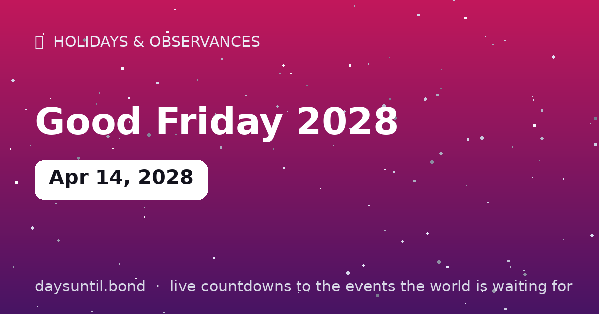

How Many Days Until Good Friday 2028?
Good Friday 2028 falls on Friday, April 14, 2028.
As of October 24, 2026: 538 days to go — 76 weeks and 6 days, 385 weekdays (153 weekend days), about 12,912 hours.

Quick facts
| Date | Friday, April 14, 2028 |
|---|---|
| Category | Holiday / observance |
About Good Friday 2028
Good Friday 2028 falls on Friday, April 14, 2028. The solemn Christian commemoration of the crucifixion, two days before Easter — a public holiday in more than 100 countries.
The live counter above updates every second and automatically switches to 'days since' once the day arrives.
Your Good Friday 2028 countdown milestones
It is easier to plan against fixed points than against a number that moves. These are the dates on which the countdown to Good Friday 2028 passes each marker between now and the day itself — the last one falls on Thursday 13 April, when there will be 1 day left.
| Milestone | Day | Date | Remaining |
|---|---|---|---|
| 365 days | Thursday | 15 April 2027 | 365 days to go |
| 200 days | Monday | 27 September 2027 | 200 days to go |
| 100 days | Wednesday | 05 January 2028 | 100 days to go |
| 50 days | Thursday | 24 February 2028 | 50 days to go |
| 30 days | Wednesday | 15 March 2028 | 30 days to go |
| 14 days | Friday | 31 March 2028 | 14 days to go |
| 7 days | Friday | 07 April 2028 | 7 days to go |
| 3 days | Tuesday | 11 April 2028 | 3 days to go |
| 1 days | Thursday | 13 April 2028 | 1 day to go |
How the remaining time breaks down
538 days is the headline, but it is rarely the number that helps. 385 of those are weekdays and 153 fall on a weekend, which is the split that matters if you are planning around work. It is 76 weeks and 6 days, or roughly 17.7 months, or about 12,912 hours.
| Unit | Until Good Friday 2028 |
|---|---|
| Days | 538 |
| Weeks | 76 weeks and 6 days |
| Months (approx) | 17.7 |
| Weekdays | 385 |
| Weekend days | 153 |
| Hours | 12,912 |
| Sleeps | 538 |
Working days are Monday to Friday and do not subtract public holidays, which vary by country and employer — the full month-by-month split is on our weekday page for Good Friday 2028.